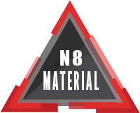

<!-- <button mat-raised-button>HOME</button>
<button mat-raised-button>TYPO</button> -->

<!--=| Menu 1 |=-->
<!-- <mat-toolbar color="primary" class="toolbar">
   <div>n8Material</div>
   <div>
      <span>Home</span>
      <span>About</span>
      <span>Services</span>
   </div>
</mat-toolbar> -->

<!--=| Menu 2 |=-->
<!-- <mat-toolbar color="primary" class="toolbarWrap">
   <div>n8Material</div>
   <div class="menuContainerWrap">
      <span *ngFor="let menu of aMenu">
            <a class="routerLinkWrap" routerLink={{menu.link}}>{{menu.name}}</a>
      </span>
   </div>
</mat-toolbar> -->

<!--=| Menu 3 |=-->
<!-- <nav class="navbar">
   <div class="container">
      <ul *ngFor="let menu of aMenu" class="nav navbar-nav" routerLinkActive="active">
         <li class="nav-item">
            <a class="nav-link activeNavItem" routerLink={{menu.link}}>{{menu.name}}</a>
         </li>
      </ul>
   </div>
</nav> -->
<div class="menuThree" style="
      position: fixed;
      z-index: 1000;
      width: 100vw;
      display: flex;
      align-items: center;
      background: var(--mat-color-red);
      height: 60px;
      box-shadow: 0px 6px 12px rgba(10, 10, 10, .35);
      ">
      
   <!-- <i class="material-icons" style="
         padding: .5rem;
         color: var(--mat-color-primary-100);
         ">
      cast_connected
   </i> -->
   <div *ngIf="showHamburger; else elseBlock">
      <!-- <app-sidenav></app-sidenav> -->
      <app-main-nav></app-main-nav>
   </div>
   <ng-template #elseBlock>
      <app-menu></app-menu>
   </ng-template>
</div>
